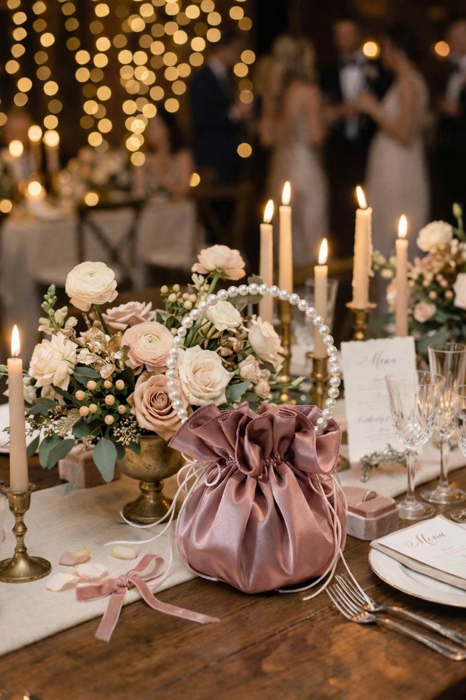

The Wedding Journal
Planning notes, style guides, and behind-the-scenes from the workroom.

How to Choose Bridal Accessories That Actually Match Your Dress
A practical walkthrough for pairing pearl and satin details with lace, crepe, and tulle silhouettes.
Read the Post →
Coordinating Your Bridal Party Without Making Everything Match
Why bridesmaid pouches and accessories should complement, not clone, the bride's look.
Read the Post →
The Flower Girl Style Guide: Crowns, Baskets, and What They Actually Need
What holds up through a full ceremony — and what looks pretty but won't survive the aisle.
Read the Post →
Choosing Your Shade: A Guide to Our Six Signature Colors
Dusty rose to sage — how each hue photographs, and which palettes it loves.
Read the Post →
Pearl by Pearl: How a Signature Pouch Is Made
From a single square of satin to a hand-strung handle — the making of one pouch, start to finish.
Read the Post →
The Wedding-Day Pouch: What Brides Actually Carry
A tiny bag, a long day — the real packing list from hundreds of weddings.
Read the Post →